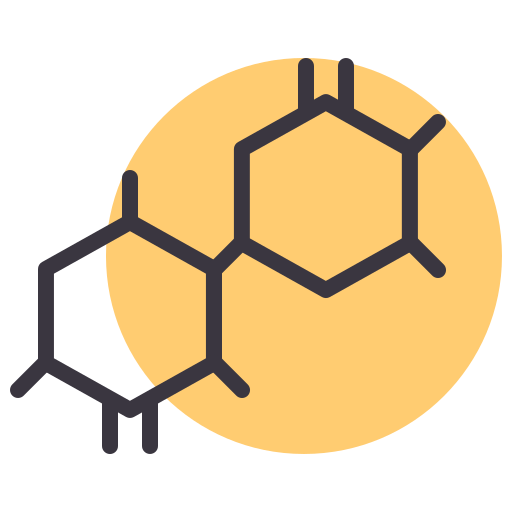

Ejemplos de Nitrilos
1. Etanonitrilo
Fórmula: CH₃CN
Formación: Se forma a partir de la reacción del cloruro de etilo (CH₃CH₂Cl) con cianuro de sodio (NaCN):
CH₃CH₂Cl + NaCN → CH₃CN + NaCl
2. Propionitrilo
Fórmula: CH₃CH₂CN
Formación: Se obtiene mediante la reacción del bromuro de propilo (CH₃CH₂CH₂Br) con cianuro de potasio (KCN):
CH₃CH₂CH₂Br + KCN → CH₃CH₂CN + KBr

Ejemplos de Amidas
1. Etanamida
Fórmula: CH₃CONH₂
Formación: Se forma mediante la reacción del ácido acético (CH₃COOH) con amoníaco (NH₃):
CH₃COOH + NH₃ → CH₃CONH₂ + H₂O
2. Bencenoacetamida
Fórmula: C₆H₅CONH₂
Formación: Se puede obtener a partir de la reacción de benceno (C₆H₆) con anhídrido acético (C₄H₆O₃) y amoníaco:
C₆H₅C(=O)OH + NH₃ → C₆H₅C(=O)NH₂ + H₂O